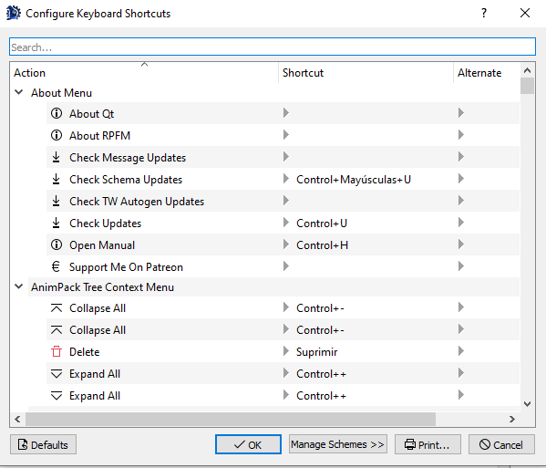

Initial Configuration

After we start RPFM for the first time, we have to configure a couple of things.
First, it should promt you to update your schemas. Hit yes. Schemas are files used to be able to edit tables, so you need them. Just remember you should always have them up-to-date.
Then, we need to go to Pack/Settings, and the window above this will popup. It seems like a lot of new stuff to know, but it's really simple. First the paths:
Game folder: These are the folders where your games are. Not where /data is, but WHERE THE .EXE IS!!! RPFM uses them for plenty of things, so remember to set them for the games you have.Assembly Kit folder: These are the folders where the Assembly Kit for each game is installed, if any.MyMod's folder: it's the path where your MyMod will be stored. MyMod are explained in a later chapter of this documentation, so for now you just need to know that it's a path RPFM will use to store stuff for your mods. Set it pointing to an empty folder.7-Zip Folder: if you have 7-Zip installed, put here the folder where the 7-Zip exe is. This is needed to support compression. Without it, if you try to compress a Pack, it'll fail.
Next, all those checkboxes. You can get an explanation about what they do just by hovering them with the mouse, like this.

Next, the Text Editor button. This controls all the settings relative to the text editor, including his theme.

And finally, the Shortcuts button. Hitting it will open the Shortcuts window, where you can see and edit all the shortcuts currently used by RPFM.

Just keep in mind that some of the shortcuts are applied when the program starts, so you'll have to close and re-open RPFM for the changes to take effect.
When you're done with the settings, just hit Save. You can restore them to the defaults with the button of the left (same for the shortcuts with their Restore Defaults button). One thing to take into account is that, if any of the paths is invalid, RPFM will delete it when hitting Save.
Now the last step. This is optional, but recommendable and it requires you to have the Assembly Kit for your games installed. We have to go to Special Stuff and, for each game we have, hit Generate Dependency Cache. This will create a special file that will help RPFM with reference data for table columns. It's not enabled for Empire and Napoleon for now, but it should work for every other game.
With that, we have completed the initial configuration. So now that we're done configuring RPFM, let's take a look at the features it has to offer.